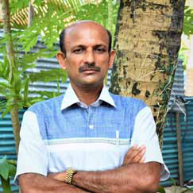
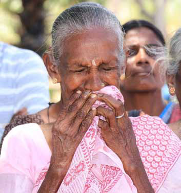
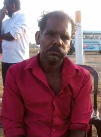
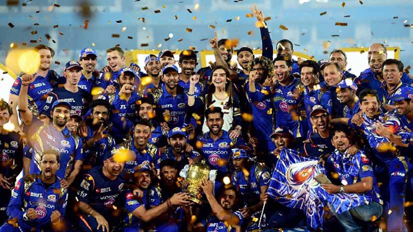
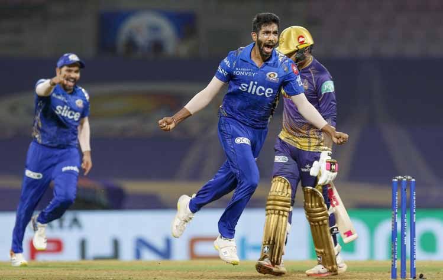
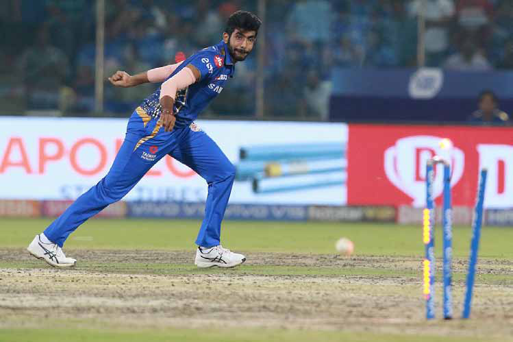

The Eastern Martyrs: Commemorating the Overlooked Victims of Internal Conflict
The Eastern Martyrs: Commemorating the Overlooked Victims of Internal Conflict
Jaffna Monitor hellojaffnamonitor@gmail.com 39 my view, just as Mullivaikal Remembrance Day is solemnly observed by Sri Lankan Tamils to honor the civilians who perished during the final phase of the Sri Lankan Civil War, and similarly, Martyrs' Day is commemorated on November 27 to remember the fallen LTTE fighters, it is imperative to also recognize the significance of the Verugal massacre. This tragic event, where the Vanni Tigers targeted their Eastern counterparts, should be marked as a day of remembrance. Commemorating this day serves as a solemn reminder of the internal conflicts' devastating impacts and could foster a spirit of reconciliation and unity among the Tamil community. This day emphasizes that such brutal killings should never recur in Tamil history. It is not a stance against the people of Jaffna, but rather against the 'Jaffna-centric thinking' of the LTTE leadership, which led to the deaths of our fighters. These individuals were targeted solely because they were from the eastern part of Tamil Eelam. The massacre reflects the LTTE's cruel mindset and tactics, which significantly alienated Eastern Tamils and fighters from the Vanni group. Had the Eastern fighters not separated from the Vanni Tigers, the conflict might have continued, potentially The Eastern Martyrs: Commemorating the Overlooked Victims of Internal Conflict By: Chandrasekaran Manisekaran Opinion

Jaffna Monitor hellojaffnamonitor@gmail.com 40 leading to a catastrophe in the East similar to Mullivaikal, with countless innocent lives lost. This division, in fact, served as a critical intervention. In my view, these Eastern LTTE fighters, killed by the Vanni Tigers, were true martyrs. Their sacrifice exposed the LTTE's true nature, helping us in the East to distance ourselves from the LTTE and Prabhakaran's extremism, which ultimately prevented a large-scale massacre like Mullivaikal in Eastern Sri Lanka. When these fighters were brutally killed, politicians from the Tamil National Alliance (TNA), whether from the North or the East, remained silent, likely due to fear of Prabhakaran and the LTTE. This silence brought us to a pivotal point where the Eastern people had to determine their own political path, leading to the formation of Eastern Tamil politics and Eastern-centric political parties. Note: Chandrasekaran Manisekaran is a writer, poet, and the principal of a school in Batticaloa. They killed my son My name is Nallathampi Sivakumar, and I reside in the small town of Sittandy. I am a father mourning the irreplaceable loss of my son, Nishanthan, known as Iniyavan, within the LTTE ranks. He was the precious light of my life, born after four daughters, and naturally held an exceptionally tender place in my heart. From the moment he arrived in this world, he was special. At the tender age of 13, my son was swept into the LTTE in 2003, his youth consumed by the complexities of civil strife. After Karuna Amman's split from the LTTE, my son returned home, seeking refuge from the conflict. However, the Vanni Tigers relentlessly pursued those loyal to Karuna Amman, and tragically, they targeted my son. Like him, hundreds of other innocent young men—the sons of grieving fathers—fell victim to the violence perpetrated by the Vanni Tigers. Since that fateful day, every dawn brings an unbearable weight, a constant reminder of the void his absence has created. Our family trudges through each day, burdened by the immense sorrow of his loss. Our home, once filled with his laughter and dreams, now echoes with silence and the heartbreak of what could have been. The pain is unrelenting, a sorrow deep and vast as the ocean. We are left to navigate this altered existence, forever changed, forever diminished, by the loss of my beloved son, Nishanthan. Nallathampi Sivakumar


Jaffna Monitor hellojaffnamonitor@gmail.com 41 Mumbai Indians have won five IPL titles, which is a whopping 1/3 championship frequency. This achievement signifies unimaginable excellence in a league of such competition and stature. If winning titles were that easy, other teams would have figured out a way, given the resources at their disposal. But excellence isn't achieved easily. It's built on culture, leadership, and many other factors. The Wankhede seemed alien as Mumbai came home this season to begin their home leg. As Rajasthan routed Mumbai, it seemed that the team wasn't what it used to be. While many have dissected the causes and shared their views, the whole leadership transition saga boils down to one big question: whether the mighty Mumbai have made a miscalculation. Nobody can tell for sure; only time will tell. However, the By: Dr. Aravinthan Arunthavanathan Sports The trade that threatens a legacy


Jaffna Monitor hellojaffnamonitor@gmail.com 42 dilemma contains interesting dynamics within itself that are worth pondering. For the sake of brevity, let's eliminate as many stakeholders as possible. To begin with, Rohit is a legendary skipper. However, in any business, the big boss must move out when the time is right, and this case is no exception. The fans, another critical stakeholder in franchise dynamics, will come to terms with the change despite the apparent animosity at present. They will accept the transition the moment Pandya turns the tide and delivers, which he must do quickly. Moreover, Pandya is at the centre of this entire saga. One cannot fully understand Pandya's role in this equation without access to the minute details of the transaction. While all those factors are left out for brevity, let us get to the single biggest dilemma Mumbai would be sweating over. Jasprit Jasbir Singh Bumrah!! In T20 cricket, it's beyond doubt that batters grab eyeballs, but it's the bowlers who win you tournaments. Bumrah has been doing this for India and Mumbai with a consistency that is almost unimaginable. He has agreed to be retained at every mega auction, which is noteworthy because no advanced algorithm can predict his value if he were to enter the free market. Bumrah's cryptic social media posts, occurring as many other fast bowlers were snatched up at prices driven by irrational auction dynamics, offer a glimpse into his thoughts on what was unfolding. Till now, Bumrah has remained loyal to the franchise despite knowing he could potentially shatter any imaginable ceiling if he refused retention and entered the auction. Unlike players like Starc and Cummins, who selectively participate, Bumrah has consistently carried the franchise and demonstrated exceptional results, establishing himself in a league of his own. Given his composed demeanour and his experience leading India in Tests, it's natural that Bumrah would harbour leadership aspirations for the post-Rohit

Jaffna Monitor hellojaffnamonitor@gmail.com 43 era. However, now that Mumbai has opted for Hardik over him for some reason and communicated in a manner suggesting that Bumrah's loyalty isn't worthy of leadership, it wouldn't be surprising to see him reconsider his loyalty and enter the free market. If he does, given Mumbai's reliance on big stars, it's hard to imagine how they could afford him at market price. Given his calibre and value, every franchise would vie for Bumrah, potentially delivering a significant jolt to the entire Mumbai Indians ecosystem. Regardless of who comes in or moves out, Mumbai cannot afford to lose Bumrah. Letting him go could have consequences more severe than the benefits of Hardik's return. However, what's intriguing is how a franchise known for its all-around excellence in both sport and business, like Mumbai, led by the best in the business, could be oblivious to the risks posed by the Hardik trade. Alternatively, if they are aware, how they plan to mitigate these risks remains a question. The answer isn't straightforward, but it is surely one worth watching out for. One might think that a single player cannot determine the fate of a team, but when a player like Bumrah—a once-in-many-generations phenomenon—is at risk, it can cause a seismic shift in the fate of any team, let alone Mumbai. Interesting times lie ahead, and only time will reveal the true value of the Hardik Pandya trade, which could potentially determine whether Mumbai will replicate its past dominance or fade into mediocrity, joining the rest of the pack. After all, leadership drives excellence and culture, and when a leadership transition is not handled correctly, it can erode these two key pillars of success.
